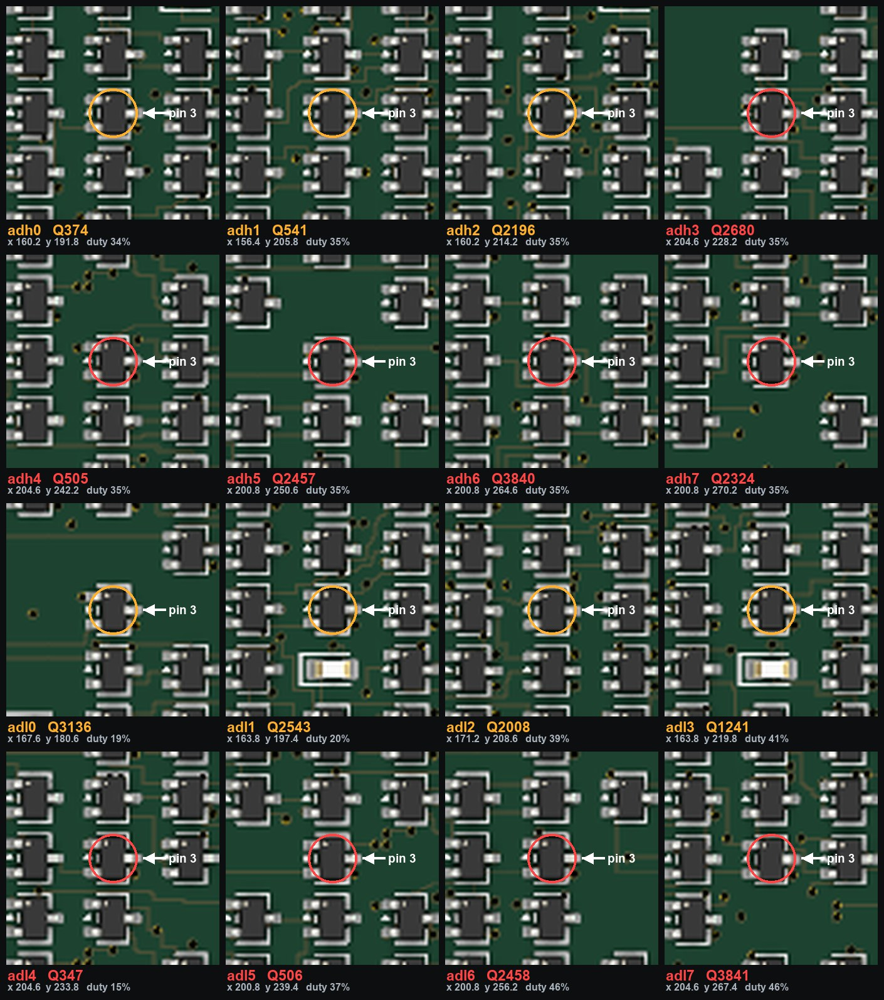

The same operation as
the eight data-bus drivers, sixteen more times, on parts that
run hotter and are easier to reach. Generated from the board by
tools/make_rework_adh_page.py.
The transform that turned the die's netlist into a board preserved every connection but not every device ratio. Ratioed NMOS needs a weak load against a strong pull-down; the 1,018 depletion loads correctly became 10 kΩ resistors, but 164 VCC-side transistors kept the same BSS138W as the transistor pulling against them — a fair fight where the design needs a rigged one. A contended pair burns about 0.9 W in a package rated for 0.3 W, and leaves a logic “low” at 1–1.9 V against a 1.1–1.5 V switching threshold.
Eight of those were repaired by hand and that repair is confirmed working. These sixteen are the
address-path precharge drivers, and they are worse: they are gated by
cclk, so they contend for a fixed fraction of every cycle rather than a
program-dependent one. Nine of them measured about 80 °C on board #1
with a thermal camera while it executed real code.
Duty is measured by tools/contention_duty.py, which simulates the board under two
workloads and reports how often each VCC-side device is fighting its pull-down. All sixteen are on
the front face, all are SOT-323, and on all sixteen pin 3 is the VCC
side — the same pin lifted on the data-bus eight.
| net | ref | x (mm) | y (mm) | duty, running | duty, NOPs | R | thermal |
|---|---|---|---|---|---|---|---|
| adh0 | Q374 | 160.15 | 191.80 | 33.7% | 14.3% | 10k | — |
| adh1 | Q541 | 156.45 | 205.80 | 35.0% | 0.3% | 10k | — |
| adh2 | Q2196 | 160.15 | 214.20 | 35.3% | 48.0% | 10k | — |
| adh3 | Q2680 | 204.55 | 228.20 | 35.0% | 0.3% | 10k | measured hot |
| adh4 | Q505 | 204.55 | 242.20 | 35.3% | 48.0% | 10k | measured hot |
| adh5 | Q2457 | 200.85 | 250.60 | 35.0% | 0.3% | 10k | measured hot |
| adh6 | Q3840 | 200.85 | 264.60 | 35.0% | 0.3% | 10k | measured hot |
| adh7 | Q2324 | 200.85 | 270.20 | 35.0% | 0.3% | 10k | measured hot |
| adl0 | Q3136 | 167.55 | 180.60 | 19.3% | 24.7% | 10k | — |
| adl1 | Q2543 | 163.85 | 197.40 | 20.0% | 25.7% | 10k | — |
| adl2 | Q2008 | 171.25 | 208.60 | 39.0% | 24.0% | 10k | — |
| adl3 | Q1241 | 163.85 | 219.80 | 40.7% | 23.0% | 10k | — |
| adl4 | Q347 | 204.55 | 233.80 | 15.3% | 25.3% | 10k | measured hot |
| adl5 | Q506 | 200.85 | 239.40 | 37.0% | 21.7% | 10k | measured hot |
| adl6 | Q2458 | 200.85 | 256.20 | 45.7% | 34.3% | 10k | measured hot |
| adl7 | Q3841 | 204.55 | 267.40 | 45.7% | 34.3% | 10k | measured hot |

Identical to the data-bus eight: lift pin 3 and bridge it back to its pad with a 10 kΩ resistor. Pin 3 is the lone pin on its side of the SOT-323, 1.78 mm from the other two, so neither neighbour is at risk.
series_r_for() rule the rev B generator uses, so the hand fix and a future
respin cannot drift apart. Do not generalise it: cclk drives 482 gates
and needs 100 Ω.Tools: fine-tip iron or hot air, fine tweezers, flux, magnification, a multimeter, and Kapton tape.
adh0–2 and adl0–3 sit around
x 156–171 mm, the rest around x 200–205 mm.Thermal, not electrical, and take the “before” picture first. Run the CPU on a real program — not NOPs, for the reason above — let it settle two or three minutes, and photograph the two clusters. Repeat after the rework from the same camera position. The nine hot sites should go cold.
The supply current is the blunt version of the same test. Board #1 drew 2.3 A executing before this rework. Note it before you start; a drop of several hundred mA is what success looks like. Do not expect the few-hundred-mA figure early versions of these pages predicted — there are 164 sites with this defect and this fixes sixteen.
Whole-board check. VCC to VSS at the bond pads, read the range-aware way: there is no resistor-only path between the rails, so a few hundred ohms that changes with the meter range is correct and healthy. A fault is under 1 Ω, or a reading that does not move between ranges.
tools/gen_netlist.py would currently skip 5 of these sixteen:
adl3, adl4, adl5, adl6, adl7. Its has_pulldown test only counts a transistor with vss directly
on a channel pin, and these nets are pulled low through a pass-gate chain instead. They
contend exactly the same way — adl6 and adl7 are the two busiest
sites on the whole board at 45.7% — so a rev B respin generated today would leave the
hottest parts unfixed.
The same flawed test also excluded them from the first duty measurement, until a thermal camera
put them back. Fix has_pulldown to follow conduction paths before trusting rev B's
142-site count.
{kind=link}